21 June - P2 October 2025 (WMA12/01) + ECAA review
Rebuilt multi-step cards - review preview. Not part of the live deck.
11 cardsWMA12/01Oct 2025P2ECAA
ECAA specimen Q15 — rigid transformations
21 June 2026 · Historical ECAA predecessor practice · Q15 · Live repair
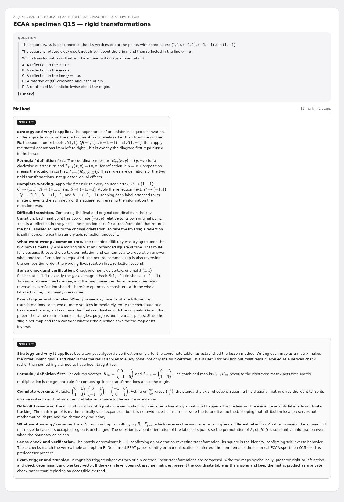
ECAA specimen Q16 — conditional probability
21 June 2026 · Historical ECAA predecessor practice · Q16 · Live repair
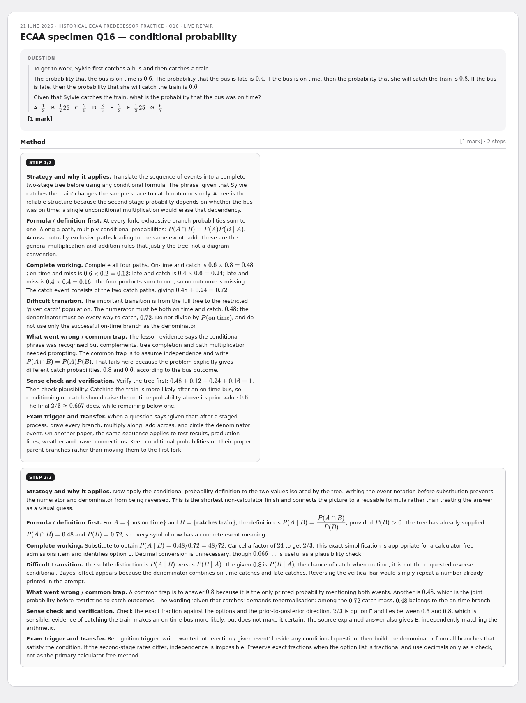
P2 Q1 — arithmetic series
21 June 2026 · Pearson WMA12/01 October 2025 · Q1 · Original correct
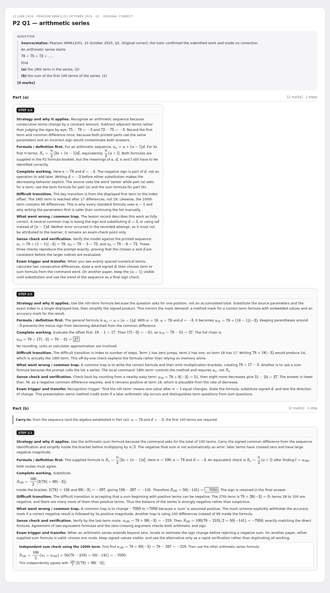
P2 Q2 — binomial expansion
21 June 2026 · Pearson WMA12/01 October 2025 · Q2 · Live repair
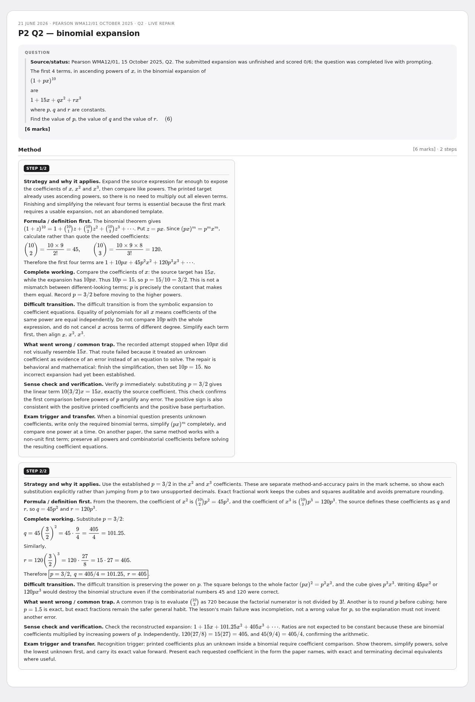
P2 Q3 — logarithms and the trapezium rule
21 June 2026 · Pearson WMA12/01 October 2025 · Q3 · Original correct / partial
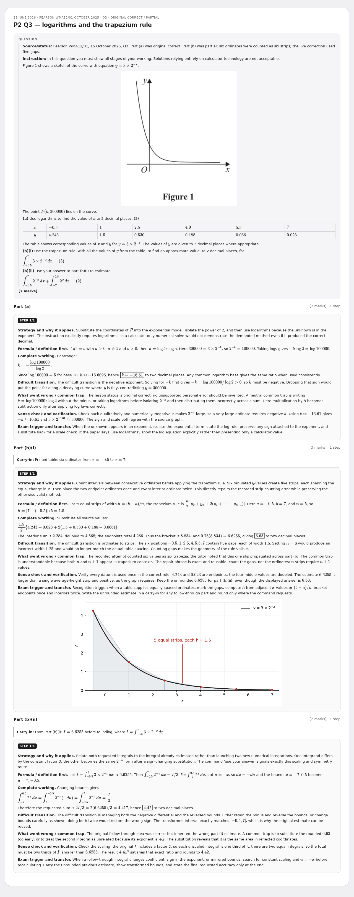
WMA12 October 2025 Q4 — polynomial division, factors and decreasing interval
Pearson Edexcel IAL Mathematics · Pure Mathematics P2 · WMA12/01 · October 2025 · Q4
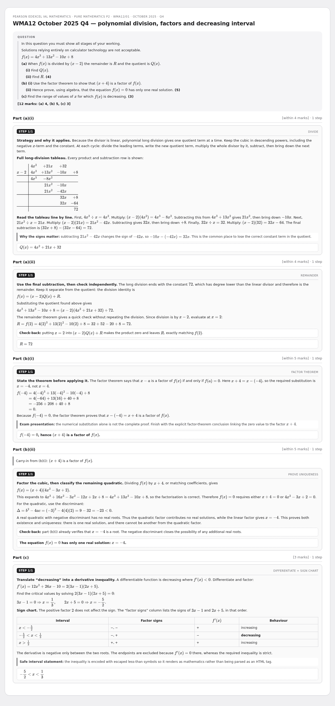
WMA12 October 2025 Q5 — trigonometric equations
Pearson Edexcel IAL Pure Mathematics P2 · WMA12/01 · October 2025 · Q5 · complete worked answer
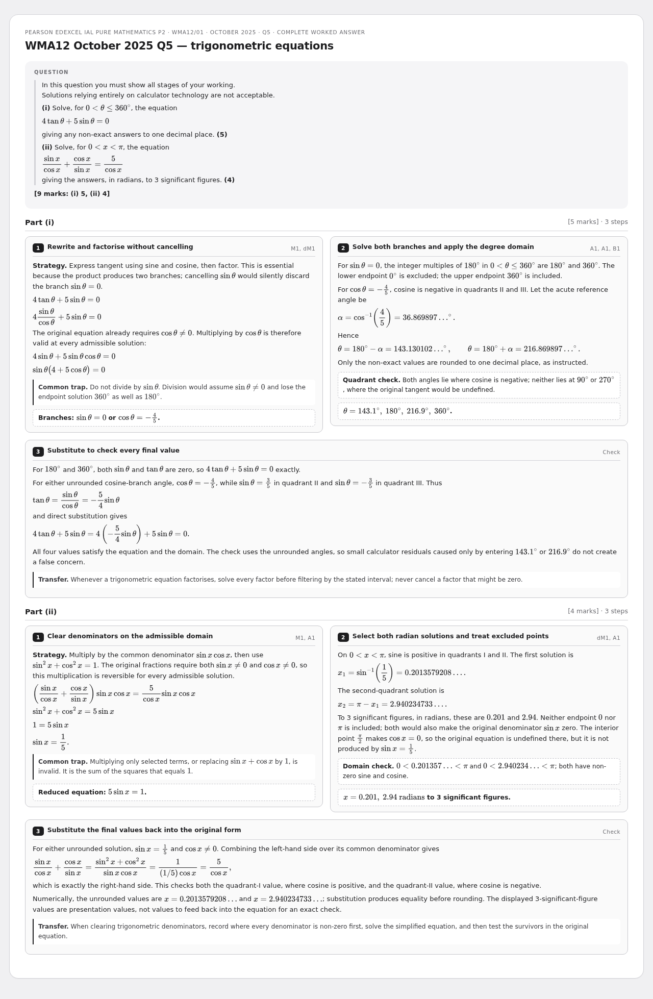
P2 Q6 — circles
21 June 2026 · Pearson WMA12/01 October 2025 · Q6 · Original correct / live repair
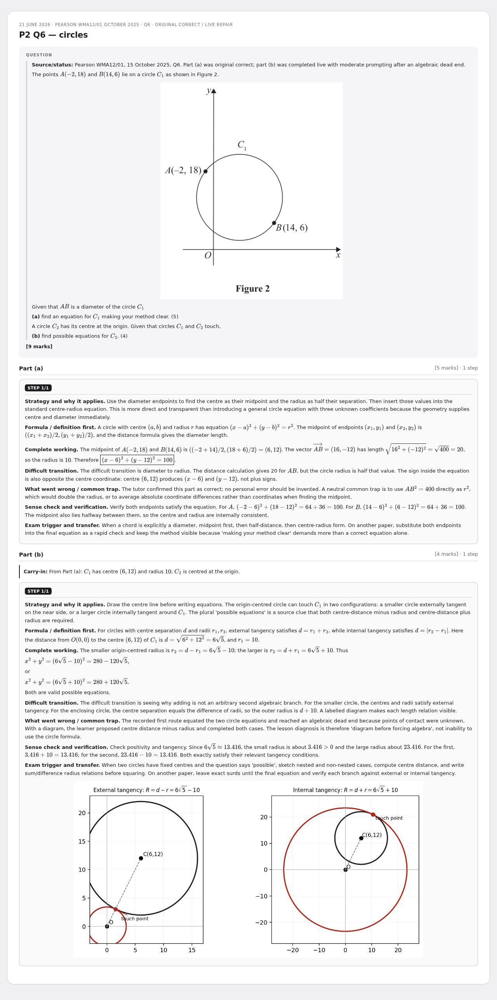
WMA12 October 2025 Q7 — differentiation and area
Pearson Edexcel International A Level Mathematics · Pure Mathematics P2 · WMA12/01 · October 2025 · Q7
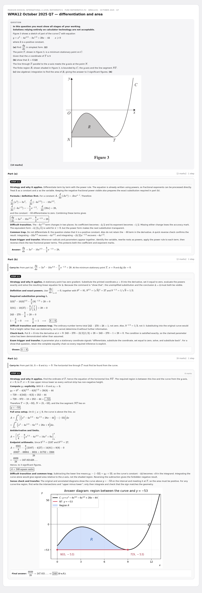
P2 Q8 — geometric series and barrel model
21 June 2026 · Pearson WMA12/01 October 2025 · Q8
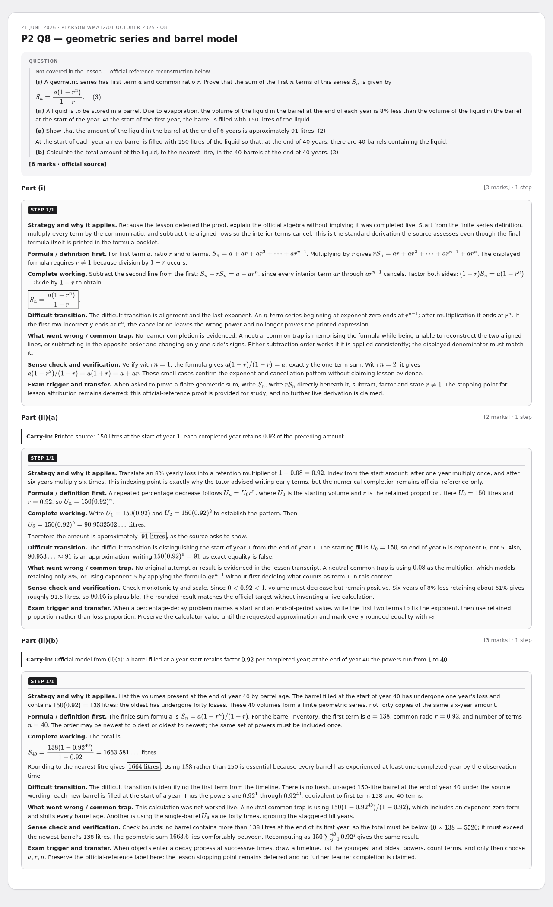
P2 Q9 — logarithms and restrictions
21 June 2026 · Pearson WMA12/01 October 2025 · Q9
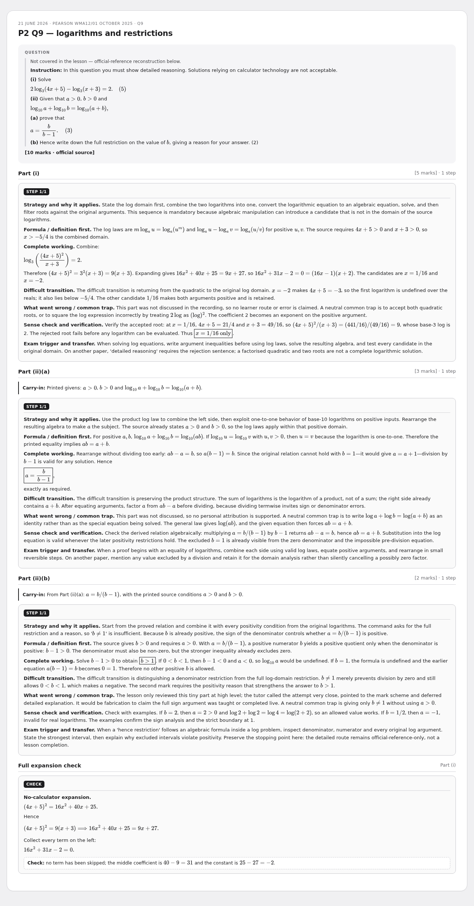